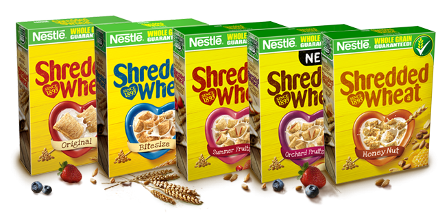

* Reducing consumption of saturated fat contributes to the maintenance of normal blood cholesterol levels. Shredded Wheat is low in saturated fat. Enjoy Shredded Wheat as part of a balanced, varied diet and a healthy lifestyle.
Together with an active lifestyle, Shredded Wheat can play a part in keeping your heart healthy*. And with just one simple ingredient, there are three good reasons to start your day with a bowl of 100% whole grain goodness.
Back in 1893, Henry Perky put his heart into keeping healthy. Little did he know that when he invented a cereal made purely from the goodness of whole grain wheat, he’d be creating a breakfast that’s still loved more than 100 years on.
An intelligent and curious man, Henry grew up on a farm and was fascinated by machinery. After studying law, he decided to follow his passion for engineering.
Being the practical fellow he was, he designed a machine to make amazing wheat biscuits. But before he knew it, the biscuits became more popular than the machine.
For over 100 years, Shredded Wheat has been helping people have a great start to their day. Low in saturated fat, no added sugar, no added salt
– just 100% whole grain goodness.
Start your day the way Henry would have wanted, with a bowl full of whole grain goodness.
From scrumptious Summer Fruits to delicious Honey Nut, Shredded Wheat has something for all tastes at breakfast.
